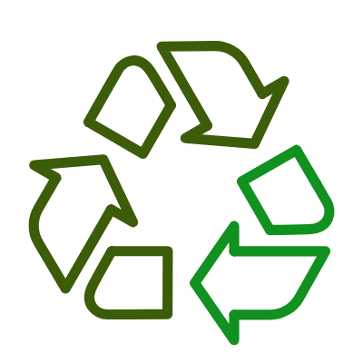

Waste Bio Tech, l’innovation écologique pour le traitement et la valorisation sur site des déchets organiques, boues et lixiviats en moins de 10 h
L’innovation qui transforme chaque déchet en ressource
Avec Waste Bio Tech, chaque déchet devient une ressource utile et valorisable. Nos procédés innovants permettent de réduire considérablement les volumes de déchets, tout en maximisant la récupération de matière et d’énergie.
Notre technologie repose sur un traitement biologique accéléré, combinant efficacité, durabilité et respect des normes environnementales les plus exigeantes.
- Réduction du volume de déchets de plus de 90 %
- Traitement en moins de 10 heures
- Revalorisation énergétique et organique des résidus

Une valorisation sur site créatrice de valeur
La technologie Waste Bio Tech favorise la valorisation locale des déchets directement sur les sites de production. Cela permet de limiter les coûts logistiques et l’empreinte carbone liée au transport, tout en générant de nouvelles ressources réutilisables.
Nos solutions s’adressent à un large panel d’acteurs : collectivités, industries agroalimentaires, stations d’épuration, sites hospitaliers, etc.